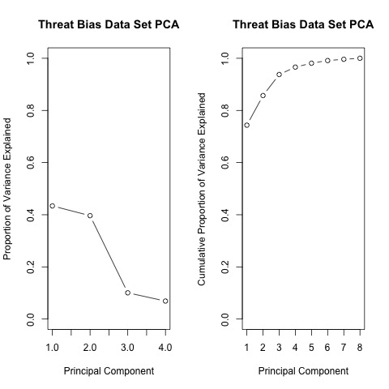
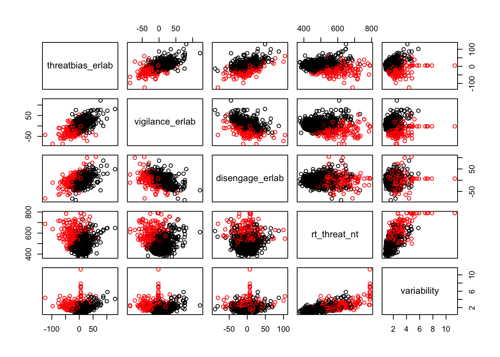
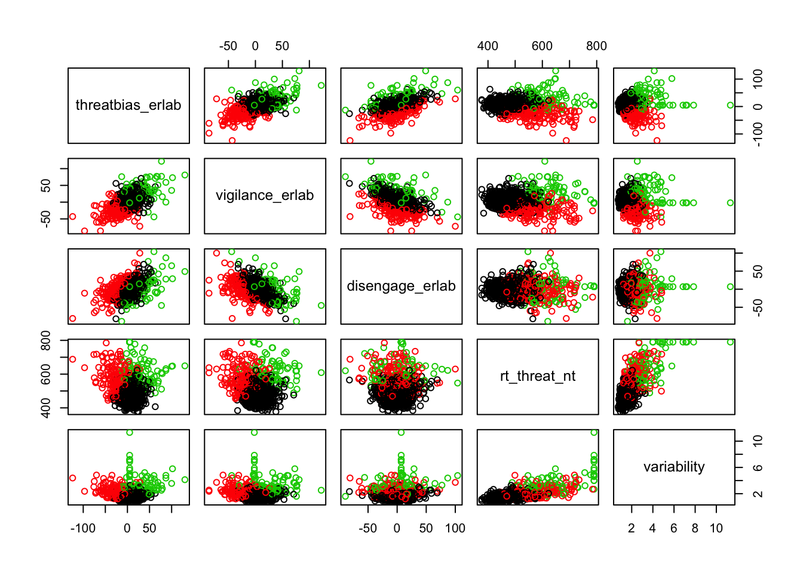
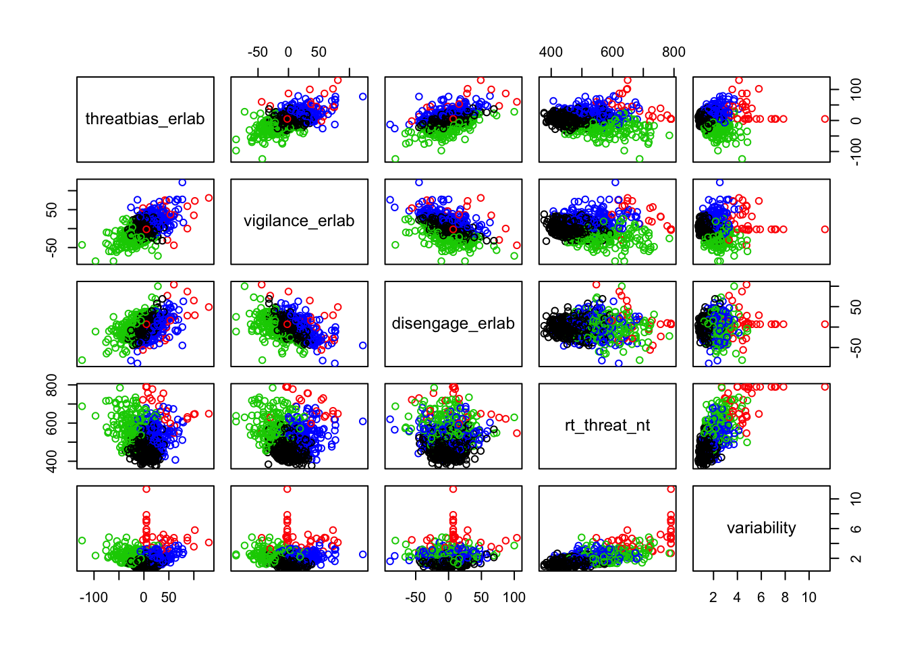
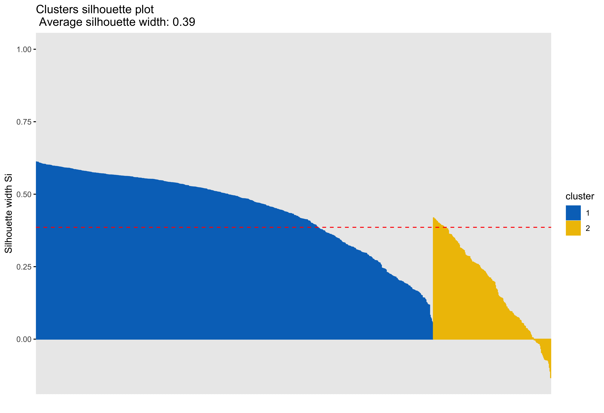
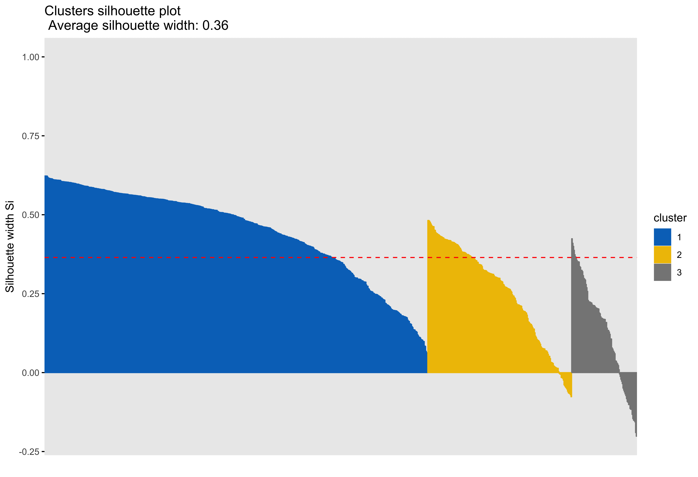
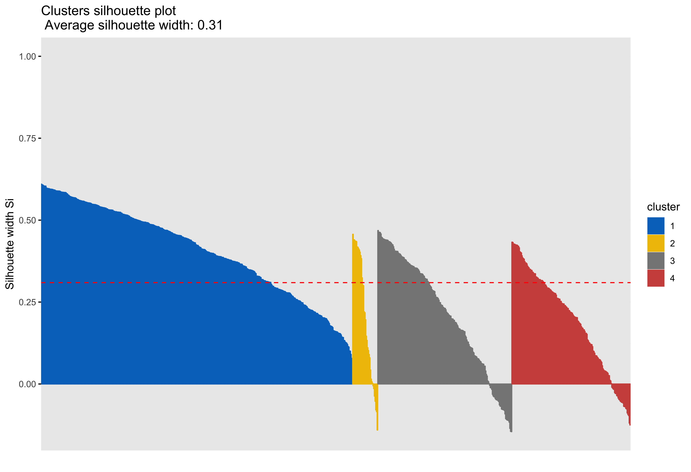
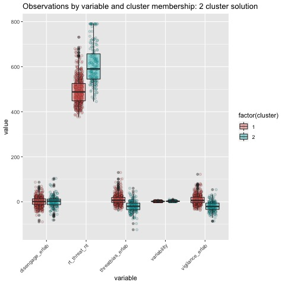

Clustering Analysis of Dot Probe Data
This post walks through an exploratory k-means clustering analysis as applied to numerical data from a dot probe task. Steps to preprocess and analyze the data are discussed and the results are presented through visualizations, as well as a discussion of the results. All code used in the analysis and in the production of this blog post is available at https://github.com/kdestasio/hc_analysis. For additional resources on clustering, see the references section at the bottom of the post.
Background information
Analyses were conducted using R (R Core Team, 2018).
platform x86_64-apple-darwin15.6.0
arch x86_64
os darwin15.6.0
system x86_64, darwin15.6.0
status
major 3
minor 5.1
year 2018
month 07
day 02
svn rev 74947
language R
version.string R version 3.5.1 (2018-07-02)
nickname Feather Spray Purpose
The purpose of this analysis is to explore whether meaningful subgroups emerge from performance on an anxiety dot probe (Bar-Haim, Lamy, Pergamin, Bakermans-Kranenburg, & Van Ijzendoorn, 2007; Mathews & Mackintosh, 1998). To conduct this exploratory analysis, we use several clustering algorithms (see Jain, 2010 for an overview of clustering). Clustering algorithms are designed to group data based on their similarity or dissimilarity (e.g. distance in euclidian space). Prior to clustering, dimension reduction is conducted via principal components analysis to decresase overfitting and to make the models more inerpretable (Zha, et al., 2002; Ding & He, 2004). The final solution is selected based on visual inspection of the cluster outcomes, and based on the sum of squared errors for each solution. Outcomes of a spectral clustering analysis (connectivity), a k-means cluster analysis (compactness), and a hierarchical clustering analysis are compared to identify subgroups within the Anxiety Dot Probe measures. These approaches are well suited to numeric data. K-means is a partition based clustering algorithm that groups data points by their euclidian distance from the cluster’s centroid, the mean of that cluster’s objects (Nerurkar et al., 2018). Spectral clustering also uses euclidian distance to group data points, but by representing the data as a similarity graph in which data poionts are nodes and the distances between them are weighted edges (Von Luxburg, 2007). Both k-means and spectral clustering require a priori specification of the number of clusters. Hierarchical clustering, in contrast, creates multiple levels of clusters and subclusters (Cichosz, 2015). As such, hierarchical clustering does not require a priori specification of number of clusters.
This analysis is done with the eventual goal of predicting treatment trajectories in an unrelated sample of Attention Bias Modification Training (ABMT) recipients. In that analysis, we will test whether cluster membership can predict the efficacy of ABMT (toward or away from threat) as measured by a post-ABMT re-application of the anxiety dot-probe.
The data
The data are from the first dot probe in a larger, multiwave study by Dr. Tracy Dennis-Tiwary and colleagues (see Figure 1 for a visual of the entire study design). Several different performance measures are calculated for the dot probe to measure bias toward and away from threatening stimuli. The variables used in the clustering analysis are listed below.

Figure 1. Study Design
Dot probe variables
Variables included in the analysis
Threat Bias(threatbias_erlab): The average response times (RTs) for neutral probes minus RTs for angry probes on trials with both angry and neutral faces.
Vigilance(vigilance_erlab): The average RTs for neutral probes in trials with only neutral images minus RTs for angry probes in trials with both neutral and angry faces.
Disengage(diesengage_erlab; removed prior to clustering): The average RTs for neutral probes on trials with both neutral and angry faces minus RTs for neutral probes on trials with only neutral images.
Threat RT(rt_threat_nt): The time between a probe appearing on screen and the subsequent button press by a participant.
Variability(variability): The absolute value of the distance (number of trials between two trials of the same type, e.g. neutral only images) across all trial-level threat bias scores / number of pairs.
Pre-processing
Outliers and missingness
Outliers were already removed from the data by our collaborators based on the percentage of trials that were answered correctly. Participants with an accuracy of .80 or greater are included in the dataset. There are no initial missing data for the dot probe measures as the included metrics can be computed for anyone who completed the task.
Zero and near zero variance
All variables were checked for zero or near zero variance and no issues were found.
Linear dependencies
disengage_erlab is a linear combination of threatbias_erlab and vigilance_erlab. disengage_erlab was therefore not included in the clustering analysis.
disengage = threat_bias - vigilanceStandardization/Scaling
Purpose: Allow comparison of data that was collected on different scales.
Clustering is sensitive to differences in the measurement scales of data (Mohamad, Usman, 2013). Since the means and standard deviations do vary across features, we standardized them by mean centering Using the scale() function (see Table 1). Variables are scaled to mean = 0, sd = 1.
| Threat Bias | Vigilance | Threat RT | Variability | |
|---|---|---|---|---|
| Raw Mean | 2.61 | 1.95 | 519.65 | 1.95 |
| Raw SD | 24.75 | 24.05 | 81.39 | 0.94 |
| Scaled Mean | 0.00 | 0.00 | 0.00 | 0.00 |
| Scaled SD | 1.00 | 1.00 | 1.00 | 1.00 |
Dimensionality Reduction, Principal Components Analysis
Purpose: prevent overfitting of the data and improve interpretability
Principal Components Analysis (PCA) is a dimensionality reduction technique that can be used as a precursor to k-means clustering (Zha, et al., 2002; Ding & He, 2004). PCA projects high dimensional data onto a lower dimensional sub-space and rotates data to mazimize variance in the new axes. The components are then listed in order of decreasing variance (e.g. component 1 has the most variation in the data, component 2 is orthogonal to component 1 and has the most remaining variation, and so on). PCA is an unsuprevised technique that can be used when we do not have hypotheses about the distribution of varaince across features.

Based on the cumulative proportion of variance accounted for by each principal component, the 3-component solution is selected for use in the clustering analysis as it is the point at which more than 90% of the variance in the data can be acounted for (see Table 2).
| PC1 | PC2 | PC3 | PC4 | |
|---|---|---|---|---|
| Standard deviation | 1.32 | 1.26 | 0.63 | 0.53 |
| Proportion of Variance | 0.43 | 0.40 | 0.10 | 0.07 |
| Cumulative Proportion | 0.43 | 0.83 | 0.93 | 1.00 |
K-means clustering
K-means is a centroid based clustering approach that groups data points around a central point to minimize within group distance and maximize between group distance. To help determine the number of clusters to use, k-means is run with 2 through 4 clusters.
Scatterplots of clustering by variable

Silhouette plots
A silhouette plot shows cluster distance, a combination of within cluster compactness and of between cluster separation. A silhouette coefficient closer to 1 means that the data are well classified, whereas a coefficient near 0 means observations are between clusters. A negative silhouette coefficient means observations are likely misclassified and that the data do not group well with any of the identified clusters. The width of each cluster in this plot represents the number of observations per cluster. Generally, we want clusters to be of roughly the same size, which we can gain information about by examining the silhouette plot.
In each of the silhouette plots below, we can see that cluster 1 is has the greatest number of observations (based on its width) and that there are no observations in cluster one that dip down into the negative. This indicates that the observations in cluster one tend to group well together.

Looking at cluster 2, we see that there are observations with a negative silhouette. This suggests that, while those observations are most similar to other observations in the cluster 2 as compared to cluster 1, they are different enough from the other cluster 2 observations that they don’t really belong there. This could happen if, for example, there was a third cluster that we had not identified that could neatly absorb the misclassified observations. However, based on examination of the scatterplots and the sillhouette plots with 3 and 4 clusters, it seems that in our case this may be due to a lack of underlying structure in the data that lends itself naturally to clusters.


Looking at each of the clustering solutions (see Table 3), we can see that the two clusters in the two cluster solution has the fewest observations with a negative sillhouette, meaning that the observations are overall better classified than in the three and four cluster solutions. The two cluster solution also has the greatest average silhouette width, which further suggests that it is a better represtentation of the data than the three or four cluster solutions, which both have smaller (though not by much) average silhouette widths. Looking at the sums of squares (SS), however, we see that the two cluster solution has a greater within cluster SS than the three and four cluster solutions, indicating that its clusters are not as compact. The lower the within SS, the better for a clustering solution. Conversely, we want the between clusters SS to be large, indicative of good separation between the clusters. We can see from our table that the two cluster solution has the smallest between cluster SS. This mwans that, while our two cluster solution best captures the underlying structure of the data, based on the silhouette width and low negative silhouette, the clusters are diffuse and close togather. This is consistent with what we can see in our scatterplots, which show that the data do not tend to cluster naturally and seem to form a mostly continuous single group (or cluster) of data. Table 4 further break down the clustering solutions, providing metrics for each cluster within each clustering soluition. This table is consistent with the conclsions drawn from table 3.
| K | Within SS | Between SS | Avg. Silhouette Width | Negative Silhouette |
|---|---|---|---|---|
| 2 | 2229.00 | 910.31 | 0.39 | 28 |
| 3 | 1610.11 | 1529.20 | 0.36 | 43 |
| 4 | 1347.36 | 1791.96 | 0.31 | 66 |
| K | Cluster | Observations | Within SS | Avg. Silhouette Width |
|---|---|---|---|---|
| 2 | 1 | 651 | 1384.47 | 0.45 |
| 2 | 2 | 193 | 844.53 | 0.18 |
| 3 | 1 | 546 | 635.01 | 0.45 |
| 3 | 2 | 205 | 454.64 | 0.25 |
| 3 | 3 | 93 | 520.46 | 0.13 |
| 4 | 1 | 446 | 381.52 | 0.41 |
| 4 | 2 | 36 | 221.68 | 0.20 |
| 4 | 3 | 192 | 438.25 | 0.21 |
| 4 | 4 | 170 | 305.90 | 0.19 |
Boxplots by variable
We can break the clusters down by variable as well to see how scores on each variable effect cluster membership. Looking at the median values and the spread of the data, it appears that reaction time probably contributes most strongly to cluster formation. However, the relationships between the variables are also involved in identifying the clusters, so the inferences we can draw from these plots are minimal. They can, however, be helpful in trying to make sense of clusters once they are formed.



Summary
The clustering analysis was performed using the threat bias variables Threat Bias and Vigilance, as well as the response time variable Threat RT and the variability variable Variability. As mentioned in the preprocessing section, Disengagem does not provide useful information for development of a clustering solution, nor its interpretation as the variable is a linear combination of Threat Bias and Vigilance. Response time is the predominent feature on which data are clustered.
Based on the scatterplots of each variable, the data do not exhibit any natural clustering tendencies. However, we discuss differences between the “best” clustering solutions to illustrate how one might decide between several possible clustering solutions.
The main difference between clusters within solutions appears to relate to response time and threat bias scores, as evidenced by the boxplots and scatterplots (see above plots). As can be seen in the silhouette plots, cluster 1 is the largest in all of the clustering solutions, reflecting generally faster response times. In the 2 cluster solution, cluster 1 members have a generally faster response time and higher threat bias scores. Cluster 2 of the 2 cluster solution contains observations with generally slower response times and lower threat bias scores. Cluster 1 is most people. In the 3 cluster solution, there is also a small 3rd cluster that consists of slower response times and higher threat bias scores. Both the 2 and 3 cluster solutions are equally “good”. The 4 cluster solution appears to break out the fourth cluster based on long response times. Any of the solutions are viable options, though the 2 and 3 cluster solutions are likely more easily interpretable and the fewer clusters there are the fewer observations fit poorly within them (see the number of negative silhouette observations in table 3). Overall clustering solution fit measures are presented in table 3 and see table 4 for summary measures of fit by cluster within each clustering solution.
References
Bar-Haim, Y., Lamy, D., Pergamin, L., Bakermans-Kranenburg, M. J., & Van Ijzendoorn, M. H. (2007). Threat-related attentional bias in anxious and nonanxious individuals: a meta-analytic study. Psychological bulletin, 133(1), 1.
Cichosz, P. (2015). Data mining algorithms: explained using R. John Wiley & Sons Incorporated.
Ding, C., & He, X. (2004, July). K-means clustering via principal component analysis. In Proceedings of the twenty-first international conference on Machine learning (p. 29). ACM.
Jain, A. K. (2010). Data clustering: 50 years beyond K-means. Pattern recognition letters, 31(8), 651-666.
Mathews, A., & Mackintosh, B. (1998). A cognitive model of selective processing in anxiety. Cognitive therapy and research, 22(6), 539-560.
Mohamad, I. B., & Usman, D. (2013). Standardization and its effects on K-means clustering algorithm. Research Journal of Applied Sciences, Engineering and Technology, 6(17), 3299-3303.
Nerurkar, P., Shirke, A., Chandane, M., & Bhirud, S. (2018). Empirical analysis of data clustering algorithms. Procedia Computer Science, 125, 770-779.
Von Luxburg, U. (2007). A tutorial on spectral clustering. Statistics and computing, 17(4), 395-416.
Zha, Hongyuan, Xiaofeng He, Chris Ding, Ming Gu, and Horst D Simon. “Spectral Relaxation for K-Means Clustering.” Advances in Neural Information Processing Systems, 2002, 1057–64.
See also
This fun clustering application that will let you play with some pokemon data and kmeans clustering: https://kdestasio.shinyapps.io/fpr_final_project/